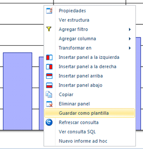
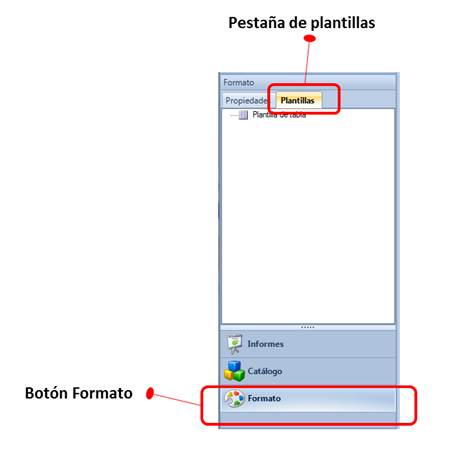
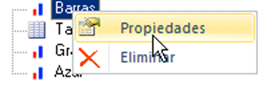
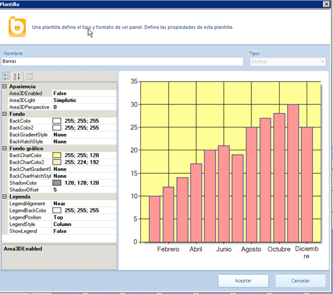

Las “plantillas de formato” permiten guardar y reutilizar la configuración estética de un panel. Permite guardar las fuentes, los colores, etcétera que se ha aplicado sobre una tabla o gráfico. Una vez guardado el formato como una nueva plantilla, es posible reutilizar el mismo formato en cualquier otro panel.
Crear plantilla
Si se quiere guardar el formato de un panel existente debemos seleccionar la opción de “Guardar como plantilla” del menú contextual del panel (hacienco clic con el botón derecho).

Al guardar la plantilla, se abrirá un formulario con sus propiedades y podremos establecer un nombre para la plantilla recién creada. Una vez guardada, aparecerá en la sección de “Plantillas” (dentro del botón “Formato), tal como muestra la siguiente imagen:

Aplicar plantilla
Para aplicar una plantilla sobre un panel existente, sencillamente se debe arrastrar la plantilla desde el panel de navegación izquierdo (sección “Plantillas”) hasta el título del panel. De este modo, el panel adoptará la misma apariencia que el panel que se utilizó para crear la plantilla...
Editar plantilla
Una vez creada una plantilla es posible modificarla. Estas modificaciones sólo afectarán a los nuevos paneles sobre los que se aplique el formato de la plantilla. Al modificar la plantilla no se modifica el formato de los paneles existentes
Para poder visualizar o modificar las características de una plantilla se debe abrir el formulario de “Propiedades” utilizando el menú contextual:

De este modo, aparecerá la pantalla con todas las características de la plantilla, y podremos modificarla o renombrarla:
